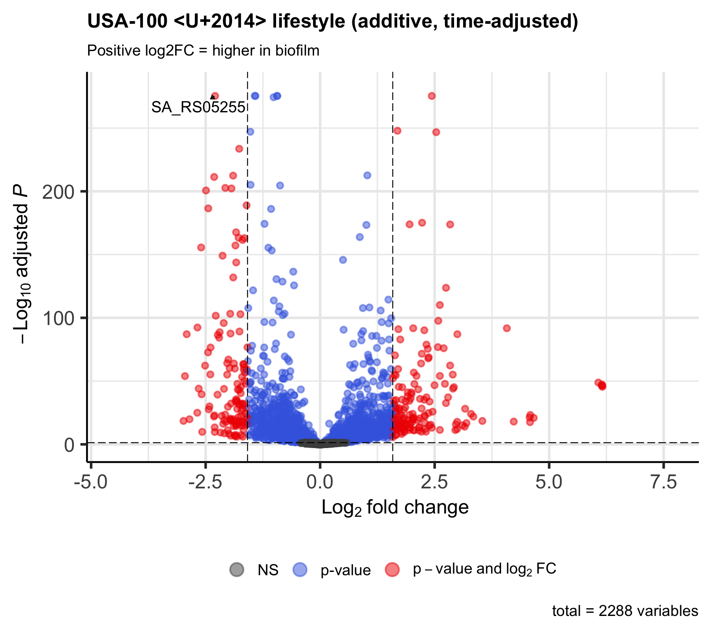
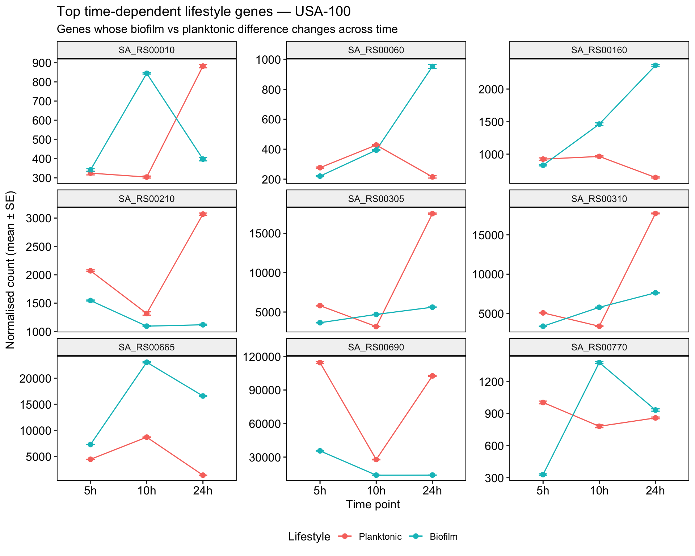

Part 2 — Lifestyle: Biofilm vs Planktonic, Accounting for Time
Now we ask how biofilm differs from planktonic. Because the two lifestyles are sampled at the same set of time points, we can model lifestyle while adjusting for time, instead of comparing at a single confounded snapshot. We show two models that ask subtly different questions.
We use all three time points so the time term is meaningful.
Code
## Design table:##
## 5h 10h 24h
## Planktonic 4 4 8
## Biofilm 4 4 82a — Additive Model: the Lifestyle Effect, Adjusted for Time
❓ The question we are answering
- Question: Averaging across time, which genes differ between biofilm and planktonic once the shared time trend is removed?
- Model:
~ timepoint + lifestyle. Thetimepointterm absorbs the ageing effect common to both lifestyles; thelifestyleterm is then the biofilm-vs-planktonic difference on top of that. - A positive log2FC means: higher in biofilm.
- A hit tells you: this gene differs by lifestyle in a way that is consistent across time — a candidate core biofilm-vs-planktonic gene, not just a growth-phase artefact.
Code
## resultsNames:## [1] "Intercept" "timepoint_10h_vs_5h"
## [3] "timepoint_24h_vs_5h" "lifestyle_Biofilm_vs_Planktonic"Code
##
## DEG counts (padj < 0.05 & |log2FC| > 1.585 ):##
## Up Down Not significant
## 156 126 2006Code

Interpretation: once the shared ageing trend is removed by the timepoint term, the number of lifestyle genes is much smaller than a naive single-time-point comparison would give. That drop is the growth-phase confound being taken out: many genes that look “biofilm-specific” at 24 h are really just ageing effects common to both cultures. What remains is a cleaner candidate set of genes that differ by lifestyle regardless of time.
⭐ What the additive model assumes. It assumes the lifestyle difference is the same size at every time point (only the baseline shifts with time, not the lifestyle gap). This is a strong assumption. If the biofilm-vs-planktonic difference actually grows with age — which the paper suggests — then a single “average” lifestyle effect is an oversimplification. The interaction model below tests exactly that.
2b — Interaction Model: Does the Lifestyle Difference Change with Time?
❓ The question we are answering
- Question: Is the biofilm-vs-planktonic difference the same at every time point, or does it change as the cultures age?
- Model:
~ timepoint + lifestyle + timepoint:lifestyle. The interaction terms capture how much the lifestyle gap at 10 h or 24 h differs from the lifestyle gap at 5 h. - A hit tells you: this gene’s biofilm-vs-planktonic difference is time-dependent — it is part of the “response strengthens (or weakens) with maturation” signal.
Code
📘 Note — testing the interaction, not a single coefficient. “Does the lifestyle gap change with time?” is a question about all the interaction terms together, so we test them jointly with a likelihood-ratio test (LRT): the full model above versus a reduced model without the interaction. A gene is significant if adding the interaction terms improves the fit — i.e. its lifestyle difference is not constant across time. Because significance here comes from comparing two models (not from one fold-change coefficient), we report the LRT p-value and use the model’s own fold-change columns for description rather than apeglm shrinkage.
Code
## resultsNames (full interaction model):## [1] "Intercept" "timepoint_10h_vs_5h"
## [3] "timepoint_24h_vs_5h" "lifestyle_Biofilm_vs_Planktonic"
## [5] "timepoint10h.lifestyleBiofilm" "timepoint24h.lifestyleBiofilm"Code
# Careful: in an LRT result the log2FoldChange column is NOT "the" lifestyle
# effect — it is only the last interaction coefficient (timepoint24h.lifestyleBiofilm).
# Use the padj for the test; describe effect sizes with the profile plots below.
res_lrt <- as.data.frame(results(dds_lrt)) %>%
rownames_to_column("gene_id") %>%
arrange(padj)
n_sig_lrt <- sum(res_lrt$padj < padj_threshold, na.rm = TRUE)
cat("\nGenes with a time-dependent lifestyle difference (LRT padj <", padj_threshold, "):",
n_sig_lrt, "\n")##
## Genes with a time-dependent lifestyle difference (LRT padj < 0.05 ): 2141How to read the plot below: each panel is one gene; the two lines show its expression over time in the two lifestyles. Parallel lines = no interaction; diverging, converging or crossing lines = the lifestyle difference changes with time.
Code
top_int <- res_lrt %>% filter(!is.na(padj)) %>% slice_head(n = 9) %>% pull(gene_id)
if (length(top_int) >= 1) {
norm_ls <- counts(dds_lrt, normalized = TRUE)
profile_df <- norm_ls[top_int, , drop = FALSE] %>%
as.data.frame() %>%
rownames_to_column("gene_id") %>%
pivot_longer(-gene_id, names_to = "sample", values_to = "norm_count") %>%
left_join(
as.data.frame(colData(dds_lrt)) %>%
mutate(sample = rownames(.)) %>%
select(sample, lifestyle, timepoint),
by = "sample"
) %>%
mutate(timepoint = factor(timepoint, levels = c("5h", "10h", "24h")))
profile_summary <- profile_df %>%
group_by(gene_id, lifestyle, timepoint) %>%
summarise(mean_count = mean(norm_count),
se = sd(norm_count) / sqrt(n()),
.groups = "drop")
ggplot(profile_summary,
aes(x = timepoint, y = mean_count, colour = lifestyle, group = lifestyle)) +
geom_point(size = 2) +
geom_line() +
geom_errorbar(aes(ymin = mean_count - se, ymax = mean_count + se), width = 0.15) +
facet_wrap(~ gene_id, scales = "free_y") +
theme_pubr(border = TRUE) +
theme(legend.position = "bottom") +
labs(x = "Time point", y = "Normalised count (mean ± SE)", colour = "Lifestyle",
title = paste0("Top time-dependent lifestyle genes — ", strain),
subtitle = "Genes whose biofilm vs planktonic difference changes across time")
} else {
cat("No time-dependent genes to plot.\n")
}
⭐ How to read this interaction result. The LRT flags a very large fraction of all tested genes as having a time-dependent lifestyle difference. When a test calls almost everything significant, the count is not a useful headline — it mainly tells you that biofilm and planktonic follow globally different trajectories over time, which we already knew from the QC. The informative output here is not the number but the shapes of the top genes above. Notice that many are driven by the planktonic cultures changing sharply between 10 h and 24 h (entry into stationary phase), while the biofilm profiles are comparatively flat, and that a few genes show true crossovers where the lifestyle with higher expression reverses over time. In other words, much of the “time-dependent lifestyle” signal is really the planktonic stationary-phase transition. Report and interpret the gene profiles, not the raw significant-gene count.
📘 Note — a subtlety about the two models. The additive model’s single lifestyle effect and the interaction test’s near-universal significance are not in conflict: the additive effect is the lifestyle difference averaged over time, while the interaction asks whether that difference is constant. Both can be true at once — there is an average difference, and it also changes with time. Which one you report depends on the question you are asking.
Additive vs Interaction: Which Should You Use?
- The additive model (
~ timepoint + lifestyle) gives one clean lifestyle effect, averaged over time. Use it when the lifestyle difference is roughly constant across time, and when you want a single, interpretable biofilm-vs-planktonic gene list. - The interaction model (
+ timepoint:lifestyle) asks whether that difference changes with age. Use it when the timing of the response is the biology of interest — as it is in this paper, where biofilm divergence is reported to grow in mature biofilms.
They are not competitors so much as answers to different questions. A common workflow is to look at the interaction first: if few genes have a significant interaction, the additive model is a fair summary; if many do, the “average” lifestyle effect hides important time-dependence and should be interpreted with care.
📘 Note — for you to write in class. Compare the number of significant genes from the additive model (2a) with the number of time-dependent genes from the interaction (2b). What does the ratio tell you about whether a single “biofilm vs planktonic” number is meaningful for this strain? Does the answer differ between USA100 and USA500?